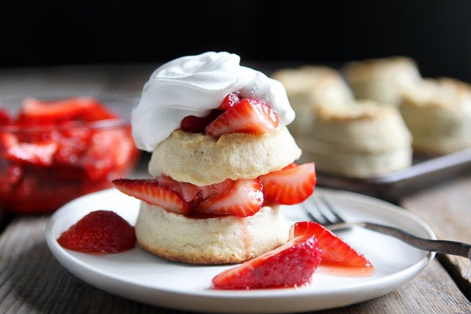

Strawberry Shortcake Recipe

This Strawberry Shortcake can be made for many celebrations and tastes like it too
It has 500 calories, 33g fat, 29g protein, 1185mg sodium, 27g carbs, 9g sugar, 3g fiber
Ingredients:
- Strawberries (2 pints)
- Sugar (1/2 cup and 3 tablespoons seperate)
- Flour (4 cups)
- Salt (1/4 teaspoon)
- Baking Powder (5 teaspoons)
- Butter (1 1/4 cups)
- Salt (1 teaspoon)
- Whipping Cream (3 cups)
- Vanilla Extract (1/4 teaspoon)
Directions
- Move a quarter of the strawberries to the side and cut the rest into halfs and then crush the quarter of strawberries for juice,
now mix them and leave for 30 minutes to get more flavor
- Preheat oven to 450 degrees, in a bowl mix flour 3 tablespoons of sugar, salt, and baking powder, next get 3/4 cup butter and rub it in,
get 1 1/4 cups of cream and mix until dough, knead the dough for a minute and roll it out until 1/2 inch thickness and cut into even number of rounds
- Use a little butter to grease baking sheet, place half of the rounds on it, use some butter on top of the bottom rounds,
and place the rest of the rounds on top, now cook for 10-15 minutes or golden brown
- Take rounds out of oven and seperate them, then brush the insides with remaining butter
- Beat the rest of the cream until thickness appears, add vanilla extract, beat more until thick
- Place a round on seperate plates, top with berries, place a round on top, and top with whipped cream and remaining berries, Enjoy!
Back to top
Click here to go back for more recipes!